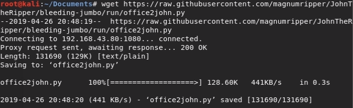
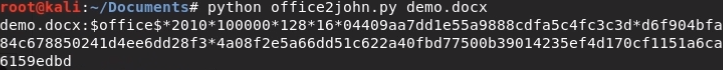
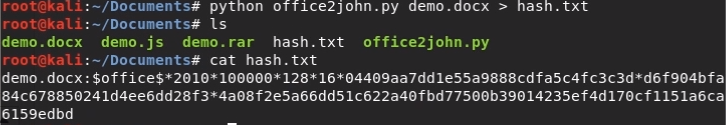
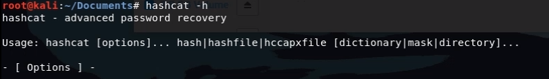
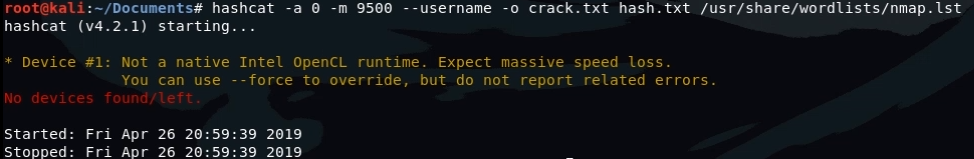
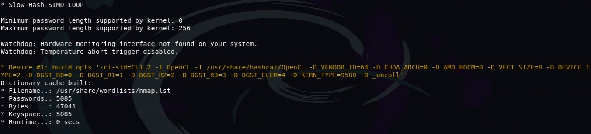
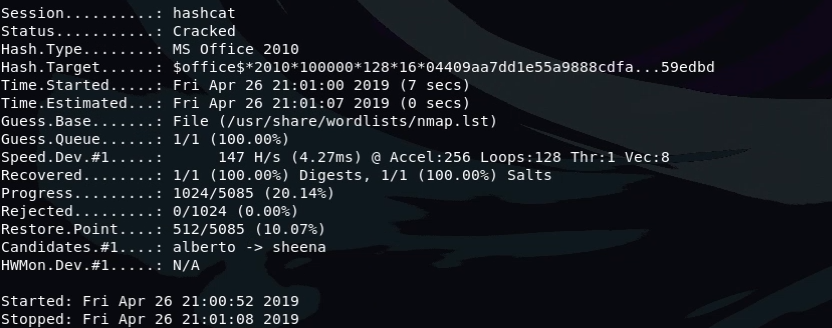
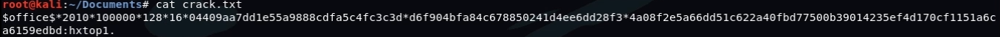
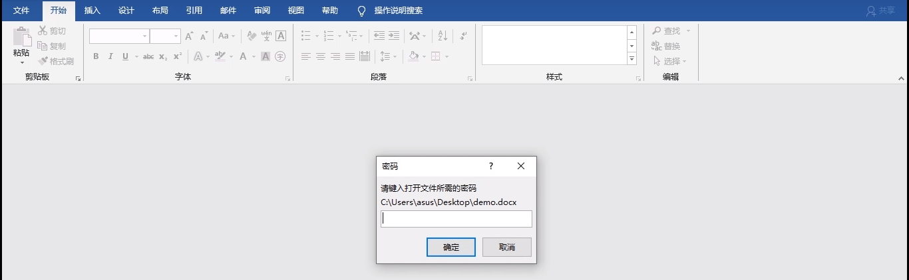
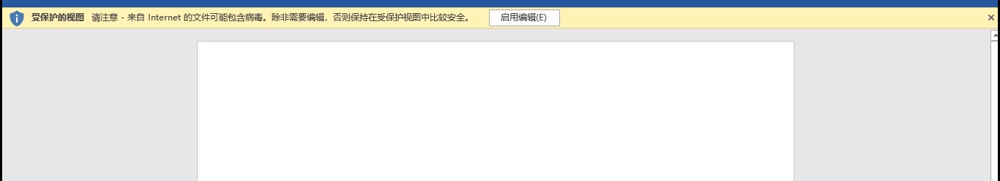

1.1. 如何使用Hashcat破解加密文档密码
那么今天我们讲的这个破解方法和上一节破解加密压缩文件夹的原理差不多，但是使用的工具不一样，我们今天会使用Hashcat来进行破解密码
上次我们使用rar2john或者zip2john来取加密压缩包的hash值，那么今天不是使用这两个，今天我们要用的是office2john
1.2. 下载office2john并修改权限
我们需要使用office2john来提取hash值，这个工具并没有在标准的Kali系统中，需要我们自行下载，我们可以通过Github来下载，通过wget就可以
wget https://raw.githubusercontent.com/magnumripper/JohnTheRipper/bleeding-jumbo/run/office2john.py

下载完成之后对office2john修改权限，加上可执行的权限
chmod +x office2john

1.3. 利用office2john提取加密文件hash值
接下来我们就来提取这个加密文档的hash值 现在我们有一个加密的文档
python office2john demo.docx

从hash值中可以看到，这个加密文档是通过office2010创建的
python office2john demo.docx > hash.txt

我们现在将hash值重定向到一个文本文件hash.txt中
1.4. 利用Hashcat破解密码
现在我们需要做的就是根据这些hash值来破解密码
上次我们使用的是john，这次我们使用hashcat来破解密码，用法不大一样
需要了解john的用法可以通过前面的文章进行了解
hashcat的用法很多，我们可以通过hashcat -h来查看
hashcat -h
 接下来我们来看看如何通过hashcat来破解密码
我们需要关注的是关于这个，因为我们刚才看到是office2010创建的加密文档，所以我们找到office2010前面的数值9500
hashcat -a 0 -m 9500 --username -o crack.txt hash.txt /usr/share/wordlists/nmap.lst
1.4.1. 参数介绍
-a 参数代表Hashcat攻击类型 -m 参数代表文件类型 -o 参数代表输出的文件 hash.txt是刚才提取出来的hash值 /usr/share/wordlists/nmap.lst代表使用这一个字典来进行破解
接下来按下回车之后就开始破解
如果出现这样的错误说明没找到GPU，我们需要加上一个参数--force让其在CPU模式下运行
hashcat -a 0 -m 9500 --username -o crack.txt hash.txt /usr/share/wordlists/nmap.lst --force
  如果状态显示为cracked说明已经破解完成  正在破解的时候可以使用s来查看状态
接下来我们查看一下密码  密码为hxtop1.
1.5. 使用破解密码打开加密文档


如果帮助到你了，希望可以得到你的打赏，谢谢B站频道传送门